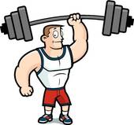

STEP 4.1:

People who have strong character:
- - Are happier
- - Get better grades
- - Have more friends
You can make your character stronger by practicing and focusing. Your brain is a muscle. Just like when you practice basketball and get better at shooting, your character muscles grow every time you use them.
NEXT